We start with an easy problem. An object travels in a straight line at a constant velocity of 5 ft⁄s for 10 seconds. How far away from its starting point is the object?
We approach this problem with the familiar “\(\text{Distance } = \text{ Rate } \times \text{ Time}\)” equation. In this case, the distance traveled is 5 ft⁄s×10 s\(= 50\) feet.
It is interesting to note that this solution of 50 feet can be represented graphically. Consider Figure 5.2.2, where the constant velocity of 5 ft⁄s is graphed on the axes. Shading the area under the line from \(t=0\) to \(t=10\) gives a rectangle with an area of 50 square units; when one considers the units of the axes, we can say this area represents 50 ft.
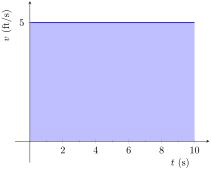
Figure5.2.2.The area under a constant velocity function corresponds to distance traveled
Now consider a slightly harder situation (and not particularly realistic): an object travels in a straight line with a constant velocity of 5 ft⁄s for 10 seconds, then instantly reverses course at a rate of 2 ft⁄s for 4 seconds. (Since the object is traveling in the opposite direction when reversing course, we say the velocity is a constant -2 ft⁄s.) How far away from the starting point is the object — what is its displacement?
Here we use “\(\text{Distance } = \text{ Rate}_1\, \times \text{ Time}_1\, + \text{ Rate}_2\, \times \text{ Time}_2\text{,}\)” which is
Hence the object is 42 feet from its starting location.
We can again depict this situation graphically. In Figure 5.2.3 we have the velocities graphed as straight lines on \([0,10]\) and \([10,14]\text{,}\) respectively. The displacement of the object is
“Area above the \(t\)-axis \(-\)Area below the \(t\)-axis,”
which is easy to calculate as \(50-8=42\) feet.
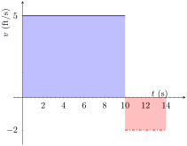
Figure5.2.3.The total displacement is the area above the \(t\)-axis minus the area below the \(t\)-axis
Now consider a more difficult problem.
Example5.2.4.Finding position using velocity.
The velocity of an object moving straight up/down under the acceleration of gravity is given as \(v(t) = -32t+48\text{,}\) where time \(t\) is given in seconds and velocity is in ft⁄s. When \(t=0\text{,}\) the object had a height of 0 ft.
What was the initial velocity of the object?
What was the maximum height of the object?
What was the height of the object at time \(t=2\text{?}\)
To answer questions about the height of the object, we need to find the object's position function \(s(t)\text{.}\) This is an initial value problem, which we studied in the previous section. We are told the initial height is \(0\text{,}\) i.e., \(s(0) = 0\text{.}\) We know \(s'(t) = v(t) = -32t+48\text{.}\) To find \(s\text{,}\) we find the indefinite integral of \(v(t)\text{:}\)
Since \(s(0) = 0\text{,}\) we conclude that \(C=0\) and \(s(t) = -16t^2+48t\text{.}\)
To find the maximum height of the object, we need to find the maximum of \(s\text{.}\) Recalling our work finding extreme values, we find the critical points of \(s\) by setting its derivative (the velocity function) equal to \(0\) and solving for \(t\text{:}\)
\begin{align*}
0 \amp = -32t+48\\
t \amp =48/32\\
\amp = 1.5\text{ s }\text{.}
\end{align*}
(Notice how we ended up just finding when the velocity was 0ft/s!) The first derivative test shows this is a maximum, so the maximum height of the object is found at
\begin{equation*}
s(1.5) = -16(1.5)^2+48(1.5)=36\text{ ft }\text{.}
\end{equation*}
The height at time \(t=2\) is now straightforward to compute:
While we have answered all three questions (using derivatives and antiderivatives), let's look at them again graphically, using the concepts of area that we explored earlier.
Figure 5.2.5 shows a graph of \(v(t)\) on axes from \(t=0\) to \(t=3\text{.}\) It is again straightforward to find \(v(0)\text{.}\) How can we use the graph to find the maximum height of the object?
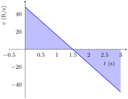
Figure5.2.5.A graph of \(v(t)=-32t+48\text{;}\) the shaded areas help determine displacement
Recall how in our previous work that the displacement of the object (in this case, its height) was found as the area under the velocity curve, as shaded in the figure. Moreover, the area between the curve and the \(t\)-axis that is below the \(t\)-axis counted as “negative” area. That is, it represents the object coming back toward its starting position. So to find the maximum distance from the starting point — the maximum height — we find the area under the velocity line that is above the \(t\)-axis, i.e., from \(t=0\) to \(t=1.5\text{.}\) This region is a triangle; its area is
\begin{align*}
\text{ Area } \amp = \frac12\text{ Base } \times \text{ Height }\\
\amp =\frac12\times 1.5\text{ s } \times 48\text{ ft/s }\\
\amp = 36\text{ ft }
\end{align*}
which matches our previous calculation of the maximum height.
Finally, to find the height of the object at time \(t=2\) we calculate the total “signed area” (where some area is negative) under the velocity function from \(t=0\) to \(t=2\text{.}\) This signed area is equal to \(s(2)\text{,}\) the displacement (i.e., signed distance) from the starting position at \(t=0\) to the position at time \(t=2\text{.}\) That is,
Displacement = Area above the \(t\)-axis \(-\) Area below \(t\)-axis.
This also matches our previous calculation of the height at \(t=2\text{.}\)
Notice how we answered each question in this example in two ways. Our first method was to manipulate equations using our understanding of antiderivatives and derivatives. Our second method was geometric: we answered questions looking at a graph and finding the areas of certain regions of this graph.
The above example does not prove a relationship between area under a velocity function and displacement, but it does imply a relationship exists. Section 5.4 will fully establish fact that the area under a velocity function is displacement.
Given a graph of a function \(y=f(x)\text{,}\) we will find that there is great use in computing the area between the curve \(y=f(x)\) and the \(x\)-axis. Because of this, we need to define some terms.
Definition5.2.6.The Definite Integral, Total Signed Area.
Let \(y=f(x)\) be defined on a closed interval \([a,b]\text{.}\) The total signed area from \(x=a\) to \(x=b\) under \(f\) is:
(area under \(y=f(x)\) and above the \(x\)-axis on \([a,b]\)) \(-\) (area above \(y=f(x)\) and under the \(x\)-axis on \([a,b]\)).
The definite integral of \(f\) on \([a,b]\) is the total signed area of \(f\) on \([a,b]\text{,}\) denoted
By our definition, the definite integral gives the “signed area under \(f\text{.}\)” We usually drop the word “signed” when talking about the definite integral, and simply say the definite integral gives “the area under \(f\)” or, more commonly, “the area under the curve.”
The previous section introduced the indefinite integral, which related to antiderivatives. We have now defined the definite integral, which relates to areas under a function. The two are very much related, as we'll see when we learn the Fundamental Theorem of Calculus in Section 5.4. Recall that earlier we said that the “\(\int\)” symbol was an “elongated S” that represented finding a “sum.” In the context of the definite integral, this notation makes a bit more sense, as we are adding up areas under the function \(f\text{.}\)
We practice using this notation.
Example5.2.8.Evaluating definite integrals.
Consider the function \(f\) given in Figure 5.2.9.
\(\int_0^3 f(x)\, dx\) is the area under \(f\) on the interval \([0,3]\text{.}\) This region is a triangle, so the area is \(\int_0^3 f(x)\, dx=\frac12(3)(1) = 1.5\text{.}\)
\(\int_3^5 f(x)\, dx\) represents the area of the triangle found under the \(x\)-axis on \([3,5]\text{.}\) The area is \(\frac12(2)(1) = 1\text{;}\) since it is found under the \(x\)-axis, this is “negative area.” Therefore \(\int_3^5 f(x)\, dx = -1\text{.}\)
\(\int_0^5f(x)\, dx\) is the total signed area under \(f\) on \([0,5]\text{.}\) This is \(1.5 + (-1) = 0.5\text{.}\)
\(\int_0^35f(x)\, dx\) is the area under \(5f\) on \([0,3]\text{.}\) This is sketched in Figure 5.2.10. Again, the region is a triangle, with height 5 times that of the height of the original triangle. Thus the area is \(\int_0^35f(x)\, dx = \frac12(15)(1) = 7.5\text{.}\)
\(\int_1^1f(x)\, dx\) is the area under \(f\) on the “interval” \([1,1]\text{.}\) This describes a line segment, not a region; it has no width. Therefore the area is 0.
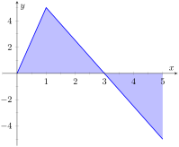
Figure5.2.10.A graph of \(5f\) in Example 5.2.8. (Yes, it looks just like the graph of \(f\) in Figure 5.2.9, just with a different \(y\)-scale.)
This example illustrates some of the properties of the definite integral, given here.
Theorem5.2.11.Properties of the Definite Integral.
Let \(f\) and \(g\) be defined on a closed interval \(I\) that contains the values \(a\text{,}\)\(b\) and \(c\text{,}\) and let \(k\) be a constant. The following hold:
As demonstrated in Example 5.2.8, there is no “area under the curve” when the region has no width; hence this definite integral is 0.
2.
This states that total area is the sum of the areas of subregions. It is easily considered when we let \(a\lt b\lt c\text{.}\) We can break the interval \([a,c]\) into two subintervals, \([a,b]\) and \([b,c]\text{.}\) The total area over \([a,c]\) is the area over \([a,b]\) plus the area over \([b,c]\text{.}\) It is important to note that this still holds true even if \(a\lt b\lt c\) is not true. We discuss this in the next point.
3.
This property can be viewed a merely a convention to make other properties work well. (Later we will see how this property has a justification all its own, not necessarily in support of other properties.) Suppose \(b\lt a\lt c\text{.}\) The discussion from the previous point clearly justifies
Property \((3)\) justifies changing the sign and switching the bounds of integration on the \(\ds -\int_b^a f(x)\, dx\) term; when this is done, Equations (5.2.1) and (5.2.2) are equivalent. The conclusion is this: by adopting the convention of Property (3), Property (2) holds no matter the order of \(a\text{,}\)\(b\) and \(c\text{.}\) Again, in the next section we will see another justification for this property.
4,5.
Each of these may be non-intuitive. Property (5) states that when one scales a function by, for instance, 7, the area of the enclosed region also is scaled by a factor of 7. Both Properties (4) and (5) can be proved using geometry. The details are not complicated but are not discussed here.
Example5.2.13.Evaluating definite integrals using Theorem 5.2.11.
Consider the graph of a function \(f(x)\) shown in Figure 5.2.14.
\(\int_a^b f(x)\, dx\) has a positive value (since the area is above the \(x\)-axis) whereas \(\int_b^c f(x)\, dx\) has a negative value. Hence \(\int_a^b f(x)\, dx\) is bigger.
\(\int_a^c f(x)\, dx\) is the total signed area under \(f\) between \(x=a\) and \(x=c\text{.}\) Since the region below the \(x\)-axis looks to be larger than the region above, we conclude that the definite integral has a value less than 0.
Note how the second integral has the bounds “reversed.” Therefore \(\int_c^b f(x)\, dx=-\int_b^c f(x)\, dx\) represents a positive number, greater than the area described by the first definite integral. Hence \(\int_c^b f(x)\, dx\) is greater.
The area definition of the definite integral allows us to use geometry to compute the definite integral of some simple functions.
Example5.2.15.Evaluating definite integrals using geometry.
It is useful to sketch the function in the integrand, as shown in Figure 5.2.16. We see we need to compute the areas of two regions, which we have labeled \(R_1\) and \(R_2\text{.}\) Both are triangles, so the area computation is straightforward:
Example5.2.18.Understanding motion given velocity.
Consider the graph of a velocity function of an object moving in a straight line, given in Figure 5.2.19, where the numbers in the given regions gives the area of that region. Assume that the definite integral of a velocity function gives displacement. Find the maximum speed of the object and its maximum displacement from its starting position.
Since the graph gives velocity, finding the maximum speed is simple: it looks to be 15ft/s.
At time \(t=0\text{,}\) the displacement is 0; the object is at its starting position. At time \(t=a\text{,}\) the object has moved backward 11 feet. Between times \(t=a\) and \(t=b\text{,}\) the object moves forward 38 feet, bringing it into a position 27 feet forward of its starting position. From \(t=b\) to \(t=c\) the object is moving backwards again, hence its maximum displacement is 27 feet from its starting position.
In our examples, we have either found the areas of regions that have nice geometric shapes (such as rectangles, triangles and circles) or the areas were given to us. Consider Figure 5.2.20, where a region below \(y=x^2\) is shaded. What is its area? The function \(y=x^2\) is relatively simple, yet the shape it defines has an area that is not simple to find geometrically.
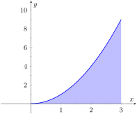
Figure5.2.20.What is the area below \(y=x^2\) on \([0,3]\text{?}\) The region is not a usual geometric shape.
In Section 5.3 we will explore how to find the areas of such regions.
ExercisesExercises
Terms and Concepts
1.
What is “total signed area”?
2.
What is “displacement”?
3.
What is \(\ds \int_3^3 \sin(x) \, dx\text{?}\)
4.
Give a single definite integral that has the same value as
\begin{equation*}
I = \int_0^1(2x+3)\, dx + \int_1^2 (2x+3)\, dx\text{.}
\end{equation*}
Problems
Exercise Group.
A graph of a function \(f(x)\) is given. Using the geometry of the graph, evaluate the definite integrals.
5.
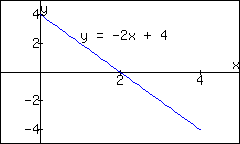
\(\displaystyle \int_0^1 (-2x+4)\, dx\)
\(\displaystyle \int_0^2 (-2x+4)\, dx\)
\(\displaystyle \int_0^3 (-2x+4)\, dx\)
\(\displaystyle \int_1^3 (-2x+4)\, dx\)
\(\displaystyle \int_2^4 (-2x+4)\, dx\)
\(\displaystyle \int_0^1 (-6x+12)\, d\)
6.
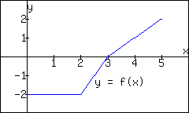
\(\displaystyle \int_0^2 f(x)\, dx\)
\(\displaystyle \int_0^3 f(x)\, dx\)
\(\displaystyle \int_0^5 f(x)\, dx\)
\(\displaystyle \int_2^5 f(x)\, dx\)
\(\displaystyle \int_5^3 f(x)\, dx\)
\(\displaystyle \int_0^3 -2f(x)\, dx\)
7.
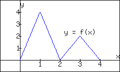
\(\displaystyle \int_0^2 f(x)\, dx\)
\(\displaystyle \int_2^4 f(x)\, dx\)
\(\displaystyle \int_2^4 2f(x)\, dx\)
\(\displaystyle \int_0^1 4x\, dx\)
\(\displaystyle \int_2^3 (2x-4)\, dx\)
\(\displaystyle \int_2^3 (4x-8)\, dx\)
8.
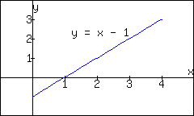
\(\displaystyle \int_0^1 (x-1)\, dx\)
\(\displaystyle \int_0^2 (x-1)\, dx\)
\(\displaystyle \int_0^3 (x-1)\, dx\)
\(\displaystyle \int_2^3 (x-1)\, dx\)
\(\displaystyle \int_1^4 (x-1)\, dx\)
\(\displaystyle \int_1^4 \big((x-1)+1\big)\, dx\)
9.
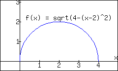
\(\displaystyle \int_0^2 f(x)\, dx\)
\(\displaystyle \int_2^4 f(x)\, dx\)
\(\displaystyle \int_0^4 f(x)\, dx\)
\(\displaystyle \int_0^4 5f(x)\, dx\)
10.
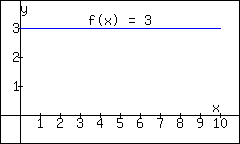
\(\displaystyle \int_0^5 f(x)\, dx\)
\(\displaystyle \int_3^7 f(x)\, dx\)
\(\displaystyle \int_0^0 f(x)\, dx\)
\(\ds \int_a^b f(x)\, dx\text{,}\) where \(0\leq a\leq b\leq 10\)
Exercise Group.
A graph of a function \(f(x)\) is given; the numbers inside the shaded regions give the area of that region. Evaluate the definite integrals using this area information.